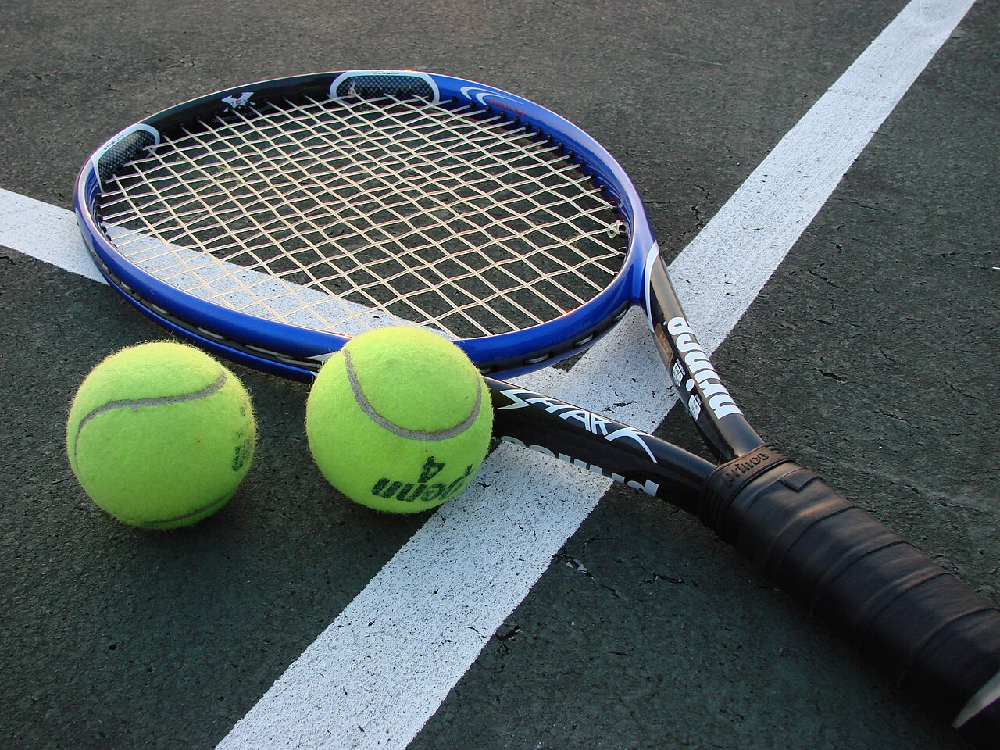

Frank Stolarski
The Story of my Life
Locations of my life
 I come from Europe. I was born in Mons, Belgium. However, I come from Poland since my entire family is from there, I just was not born there. I lived there for about 7-8 years, moving houses once every 1-2 years, where we always lived somewhere on the countryside/in the suburbs, never in the city such as brussels. Moving frequently during my childhood caused challenges and brought benefits; such as difficulty of making long-term friends, though being able to improve at adapting to new environments. Afterwards, I moved to a neighboring country called Luxembourg. It is a small country, which you can drive across in under an hour for reference. However, it is one of the richest countries in europe, ranking #1 in GDP per capita , although it mostly appears underwhelming and boring. Thats where I lived until 3 years ago, where I moved to the U.S. with my family. Our nomad-like lifestyle continued here, changing homes once every year, ultimately ending up in Carmel Valley San Diego.
I come from Europe. I was born in Mons, Belgium. However, I come from Poland since my entire family is from there, I just was not born there. I lived there for about 7-8 years, moving houses once every 1-2 years, where we always lived somewhere on the countryside/in the suburbs, never in the city such as brussels. Moving frequently during my childhood caused challenges and brought benefits; such as difficulty of making long-term friends, though being able to improve at adapting to new environments. Afterwards, I moved to a neighboring country called Luxembourg. It is a small country, which you can drive across in under an hour for reference. However, it is one of the richest countries in europe, ranking #1 in GDP per capita , although it mostly appears underwhelming and boring. Thats where I lived until 3 years ago, where I moved to the U.S. with my family. Our nomad-like lifestyle continued here, changing homes once every year, ultimately ending up in Carmel Valley San Diego.
Family
 I have 2 Brothers, one is 22 called Stan, the other is 14 called Jan. I live with my parents as well, my mother and my father. My oldest brother lives in Europe and goes to University of Utrecht there. Hes enrolled in an honors program, where top-performing students help improve the state of their university. He is the president of this program, a prestigious 1/1 position at the university. My younger brother goes to CCA as well, and has just started out as a freshman. Our extended family still lives in Europe, such as my aunt and uncle who live in Luxembourg; where I moved from, although my grandparents still live in Poland, where we all come from. I also have a dog, she is a westie called Peppa, like from Peppa Pig.
I have 2 Brothers, one is 22 called Stan, the other is 14 called Jan. I live with my parents as well, my mother and my father. My oldest brother lives in Europe and goes to University of Utrecht there. Hes enrolled in an honors program, where top-performing students help improve the state of their university. He is the president of this program, a prestigious 1/1 position at the university. My younger brother goes to CCA as well, and has just started out as a freshman. Our extended family still lives in Europe, such as my aunt and uncle who live in Luxembourg; where I moved from, although my grandparents still live in Poland, where we all come from. I also have a dog, she is a westie called Peppa, like from Peppa Pig.
Hobbies
I play sports such as Tennis, Golf, and Basketball, although none competitively; just for fun. My favorite sport is Badminton, although I don't play it much anymore. I used to play badminton in a club, and participated in some local tournaments, even winning a few. However I fell out with the sport after moving to the U.S. I play games with my brothers and friends sometimes, such as chess or mobile games. However during my free time, I usually just spend time studying or sleeping, especially during stressful times like finals or midterm weeks. Possibly not considered a hobby, but I enjoy hanging out with friends as well. We play sports, go out to eat, and play games sometimes, especially with my european friends whom I cannot hangout with anymore.